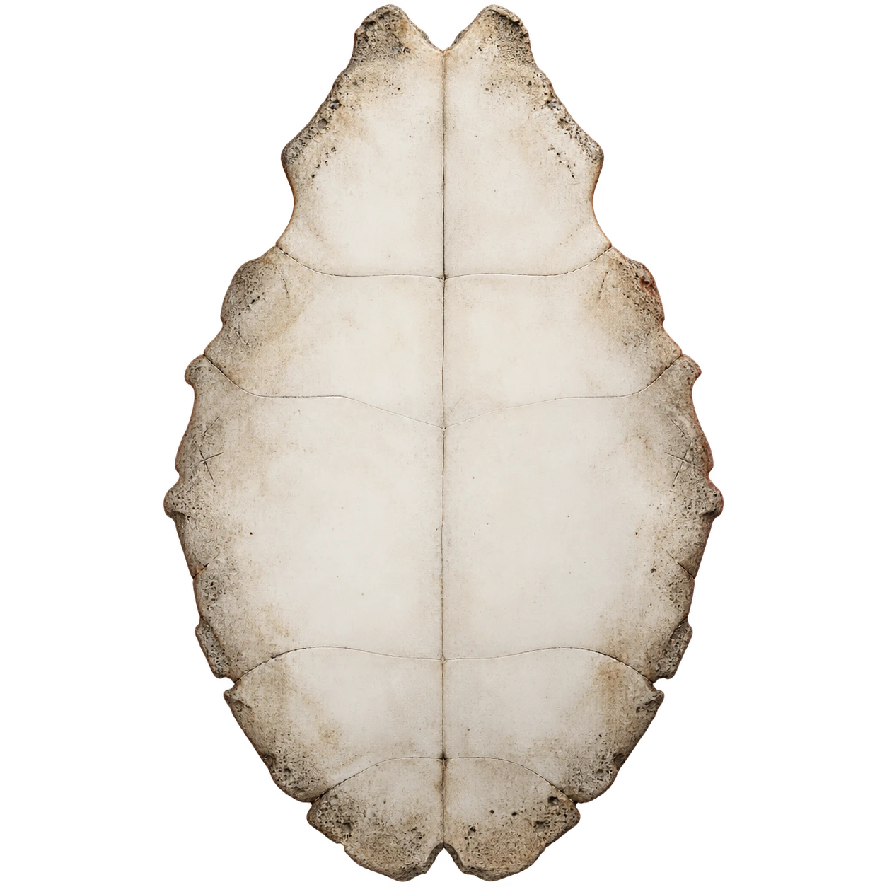

壹
玄鸟司契 · 观象问时VOL. 甲
一 念 起 万 象 生
叩问此刻。
以古之象，照今之问。
兽面 · 龟甲 · 青铜殷商意象 / 当代拟作
灼 龟 成 契
心有所问
静心而问
此刻 · 北京
四法参看六壬 天地四课小六壬 月日时诀梅花易数 体用生克四柱 生辰五行
契 成 · 观 象
此问有象
所问
契辞仿卜辞 · 当代拟作
白话释义
此刻可做
课象参看
有据可循 · 各法独立起算贰
六壬四课
月将加时 · 干支寄宫叁
梅花易数
年月日时 · 本卦与变卦肆 / 生 辰 参 看
四柱与五行
展开本次推算依据
课象为传统规则的文化演绎，不具有预测未来的科学依据。文言与译文为规则化拟作；请以现实信息与自己的判断为准。
以 火 问 甲 · 以 兆 成 辞
龟甲卜问

心中所问，书于右侧；执火取兆。
- 壹刻问
- 贰灼甲
- 叁观兆
所念何事，今以甲问。
小六壬、六壬四课、梅花易数，共参此甲。
此兆
契 辞 已 成
今问刻于甲
- 前辞 何日而卜
- 命辞 所问何事
- 占辞 仿古拟作
- 验辞 事后所记
- 未验。俟事后书之。事情尚未发生，不预写应验。
白话释义
判兆有据
兆纹为本站将三法课象转成龟甲意象的固定规则；属现代合参演绎。
龟卜何以成兆？查看三法与兆纹的对应规则
古人以龟腹甲或兽骨受热后的裂纹为兆，再作占断，相关内容可刻记在甲骨上。本板块借其意象，以后世术数课盘决定所见兆纹：先起课，再显兆、成辞。
若本问与上方已经起课的问题一致，沿用该次课盘及北京时间；否则点击时以当前北京时间起课，不必填写生辰。两处共用小六壬、六壬四课、梅花易数的计算。问题文字不改变时间课盘。课盘相同，兆类、裂纹及动爻标记相同；重新起课跨越时辰、日期或中气界限时，相关课象才可能改变。
| 所参之法 | 舒向 | 敛向 | 未定 |
|---|---|---|---|
| 小六壬 | 大安、速喜、小吉 | 留连、赤口 | 空亡 |
| 六壬每课 | 比和、上生下 | 上克下、下生上 | 下克上 |
| 梅花体用 | 比和、用生体 | 用克体、体生用 | 体克用 |
六壬四课先分别取向，再比较舒、敛课数，多者定向，相等则未定。三法合参时，至少两法舒向且无敛向，成“舒兆 · 可试”；至少两法敛向且无舒向，成“敛兆 · 宜守”；其余成“交兆 · 未明”。这里将“下克上、体克用”视为尚须主动用力，暂归未定；不是对古法吉凶的统一定论。
兆类决定主纹形态。旁支以固定模板为基准：四课中每一舒向横向展开 5%，每一敛向收缩 5%；主纹六节自下而上，红圈位置对应梅花动爻。全程没有随机抽取。六壬仅使用天地盘与四课，未含三传、天将；这套龟兆映射是本站的现代合参演绎，不是复原的殷商断兆规则，也不是受热物理仿真。
前辞、命辞、占辞、验辞只是本页借用的记述框架。问辞沿用你的原话，其余文言为现代拟作；验辞属于事后记录，所以这里保留“未验”。不需要使用真实龟甲或火焰。